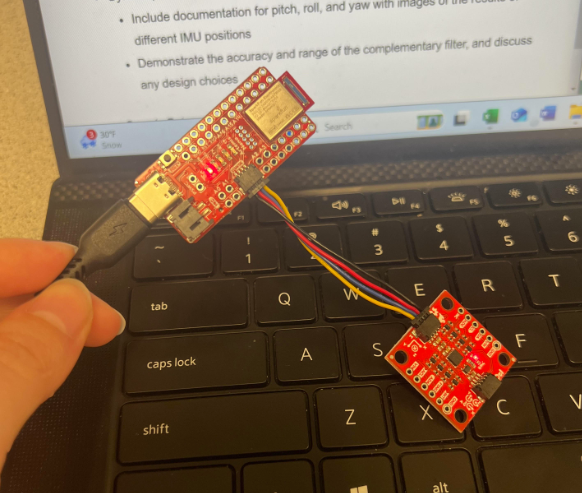
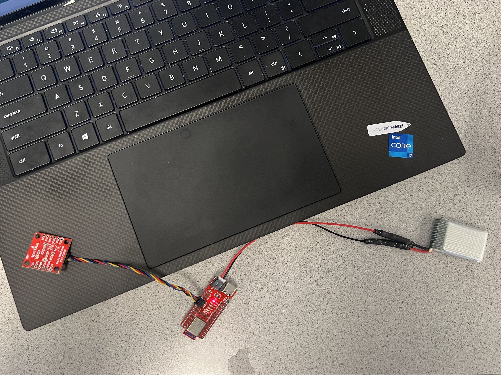
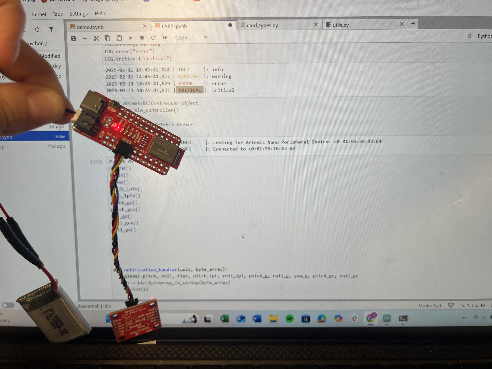
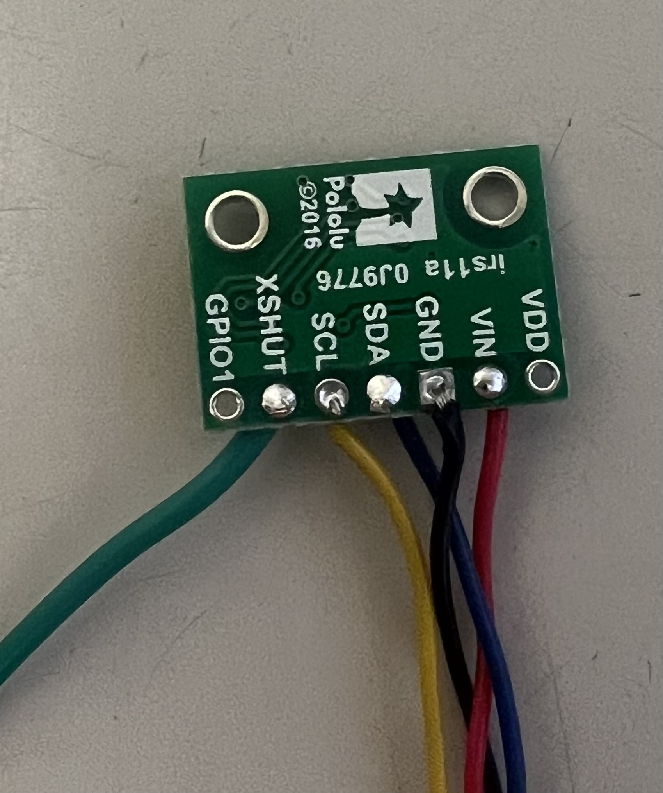
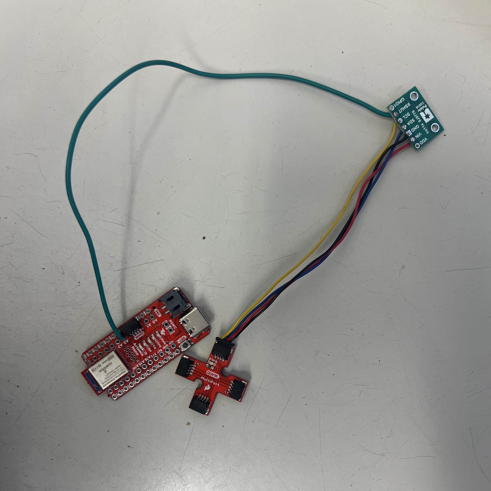
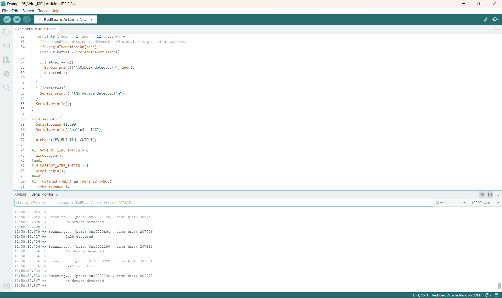
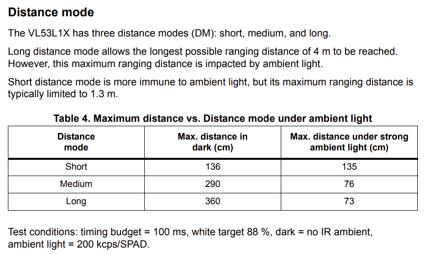

Lab 3 : TOF
Prelab
Before going into the lab, I planned out how to connect the ToF sensor to the Artemis board. I used the following connections:
add image of setup

Since we have two ToF sensors, both will have the same I2C address by default. Since we cannot have two
devices with the same address on the same bus, we need to change the address of one of the sensors.
The I2C bus (Inter-Integrated Circuit) is a form of communication between multiple devices by using serial (bit by bit)
communication. Essentially, the master device is the Artemis board and it sends a message, and the slave devices, like the ToF, has a address which it recognizes and then responds to. In simplier terms, the master device asks the slave device for data, the slave device sends the data back to the master device.
However, each slave device, the two ToFs, must have a unique address. How I will ensure that both ToF have different address is I will wire the XSHUT pin to one of the Artemis GPIO pin.
Then, I will disable one of the ToF sensors by setting the GPIO pin low (0), then change its address before turning it back on.By doing this
the ToF that is disabled will have a different address than the ToF that is enabled.
What I am currently planning to place the ToF in front and the back of the car. The reason why I think this would
a better choice because this allows the car to detect objects in front of it and behind it. This is important because
if the car is going forward and it detects an object in front of it, it can stop. If the car is going backwards and it detects an object behind it.
A concern that I do have is it may not be able to detect its blind side or obstacles. However, I think this is a good start to
where the ToF can potentially go. Another position would be side and front, but it won't be able to detect the back. I will have to think about this
more as I go through the lab.
Task 1: Power up Artemis with a battery
I soldered the JST connector to the 650mAh batteries to which I then used to
power the Artemis. I then tested commands from lab 1 to check the BLE connection
by powering the Artemis with just the battery, as shown above!
I also included some pictures battery connected to the Artemis board!


Task 2: Connect the ToF sensor to the QWICC breakout board
In order to connect the ToF sensior to the Artemis, I soldered the longer QWIIC cable to the pads of the
ToF board.
red wire -> Vin
black wire -> Vout
yellow wire -> SCL
blue wire -> SDA
As shown below:


Task 3: Scan the I2C channel to find the sensor
I installed SparkFun VL53L1X 4m laser distance sensor library, and from there I opened
file->Examples->Apollo3->Example05_Wire_I2C.ino
I then connected one of my ToFs, and the Example05_Wire_I2C.ino sketch detected the sensor on the I2C bus. The output of the scan is shown below:

As seen above, the sensor had a I2C address of 0x29. According to the datasheet for the ToF, the default address is 0x52.
For 0x52 in binary is 0b01010010 and for 0x29 is 0b00101001. However, notice that for 0x52 in binary it has been shifted to the right
which results in 0b00101001 (or 0x29). This operation is essentially is removes the the least significant bit which is used read/write.
Task 4: ToF Sensor
Sensor Mode Discussion
Using the SparkFun VL53L1X Arduino library, I found that it supports two modes, which are short and long. I was able to lookup the
datasheet for the ToF, and it gave an overview for both long and short modes. For long mode, it can reach up to 4m, but the maximum distance it can measure under strong ambient light is .73m.
However, for the short mode the maximum distance is 1.36m in the dark, and the maximum distance under strong ambient light is 1.35m. I have included the
chart below as a reference!

Considering that the car may be under different environments where it may affect the sensors ability to perform, I would rather choose the short mode.
Given that with the short mode the effect of light is very minimal, it is more of the logical choice.